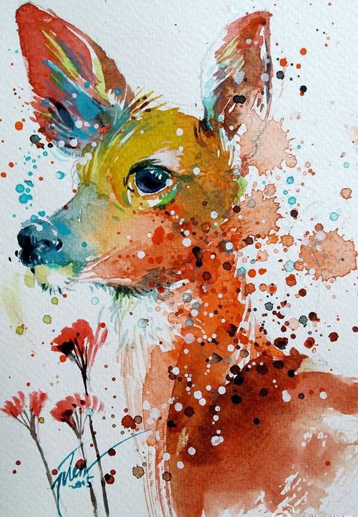

.jpg)

豹(辛郁)
一匹豹
在旷野之极
蹲着
不知为什么
许多花 香
许多树 绿
苍穹开放
涵容一切
这曾啸过
掠食过的
豹 不知什么是香着的花
或什么是绿着的树
不知为什么的
蹲着 一匹豹
苍穹默默
花树寂寂
旷野
消失
我是一匹来自北方的狼，骨子里带着几分轻狂。
时而在宁静的湖边徜徉，时而在茫茫的草原上流浪。
有时带着几丝惆怅，抑或带着几许忧伤，
偶而带着几多嚣张，兼或带着几缕迷惘。
人生的号角已然吹响，前进的战鼓依然嘹亮。
北方的狼已经不再属于北方，北方的狼决定南畔孤身独闯。
跋山涉水有时尽，攀登高峰无尽长。
对酒当歌几何有，譬如朝露苦多尝。
然而不论是海枯石烂，不管是地老天荒，
故土难离乡难忘，落叶归根是衷肠。
纵然是远隔千山万水，即便是相差万里城长，
北方的狼都时刻思念寒冷的北方，因为它始终是一匹来自北方的狼!
时而在宁静的湖边徜徉，时而在茫茫的草原上流浪。
有时带着几丝惆怅，抑或带着几许忧伤，
偶而带着几多嚣张，兼或带着几缕迷惘。
人生的号角已然吹响，前进的战鼓依然嘹亮。
北方的狼已经不再属于北方，北方的狼决定南畔孤身独闯。
跋山涉水有时尽，攀登高峰无尽长。
对酒当歌几何有，譬如朝露苦多尝。
然而不论是海枯石烂，不管是地老天荒，
故土难离乡难忘，落叶归根是衷肠。
纵然是远隔千山万水，即便是相差万里城长，
北方的狼都时刻思念寒冷的北方，因为它始终是一匹来自北方的狼!
春鸟
春鸟是金嗓子的好伙伴
每天一大早
就把我从梦中唤醒
妈妈说春鸟是在召唤我
她要我和她一道到大森林里去
倾听大自然动人的合唱

银鱼
施蛰存
横陈在菜市里的银鱼,
土耳其风的女浴场.
银鱼,堆成了柔白的床巾,
魅人的小眼睛从四面八方投过来.
银鱼,初恋的少女,
连心都要袒露出来了.
施蛰存
横陈在菜市里的银鱼,
土耳其风的女浴场.
银鱼,堆成了柔白的床巾,
魅人的小眼睛从四面八方投过来.
银鱼,初恋的少女,
连心都要袒露出来了.
青鸟（蓉子）
从久远的年代里--
人类就追寻青鸟，
青鸟，你在哪里?
青年人说：
青鸟在邱比特的箭簇上。
中年人说：
青鸟伴随着"玛门"。
老年人说：
别忘了，青鸟是有着一对
会飞的翅膀啊......
从久远的年代里--
人类就追寻青鸟，
青鸟，你在哪里?
青年人说：
青鸟在邱比特的箭簇上。
中年人说：
青鸟伴随着"玛门"。
老年人说：
别忘了，青鸟是有着一对
会飞的翅膀啊......
雪狐（吕宗林）
如果一群狐从旷野间走来, 仿佛远古迁徙的群队
谁的耳朵耸立得比山峰更高, 谛听这令冬天更寒冷的音节
雪野的狐看上去甚至比白雪更耀眼, 一架雪撬像喑哑了的琴一般
冻僵于森林的边缘, 而雪狐
以它们柔韧而有力的脚步, 拔响了这脆弱的琴弦
瞧：那领头的母狐目光多么犀利, 当细雪轻沾于它们的脸颊
缓缓绽开一朵朵玫瑰, 恍若新婚的礼花抑或飘逸的红霞
让人分辨不清这雪中神秘的幻影, 一群雪狐
跟随着雪花温暖的音乐, 步履沉着朝前走
它们丝毫不知道害怕, 雪原中已深藏温柔的陷阱
如果一群狐从旷野间走来, 仿佛远古迁徙的群队
谁的耳朵耸立得比山峰更高, 谛听这令冬天更寒冷的音节
雪野的狐看上去甚至比白雪更耀眼, 一架雪撬像喑哑了的琴一般
冻僵于森林的边缘, 而雪狐
以它们柔韧而有力的脚步, 拔响了这脆弱的琴弦
瞧：那领头的母狐目光多么犀利, 当细雪轻沾于它们的脸颊
缓缓绽开一朵朵玫瑰, 恍若新婚的礼花抑或飘逸的红霞
让人分辨不清这雪中神秘的幻影, 一群雪狐
跟随着雪花温暖的音乐, 步履沉着朝前走
它们丝毫不知道害怕, 雪原中已深藏温柔的陷阱